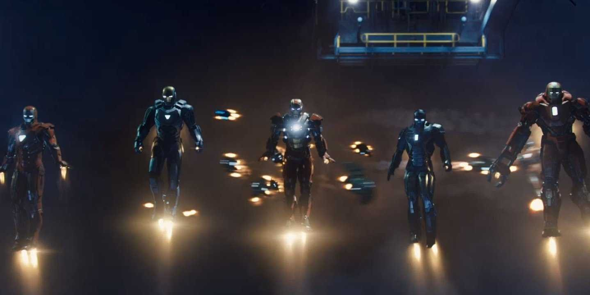

Iron man 3
Iron man 3 (2013) -filmweb

Tony Stark (Robert Downey Jr.) skonstruował niegdyś kostium - zbroję, którą zakłada,
by jako Iron Man zwalczać niebezpiecznych przestępców. Teraz superbohater powraca,
aby zmierzyć się z najgroźniejszym ze swoich przeciwników. Biolodzy Maya Hansen (Rebecca Hall)
i Aldrich Killian (Guy Pearce) stworzyli zabójczy wirus Extremis i sprzedali go międzynarodowej
grupie terrorystów, na której czele stoi tajemniczy Mandaryn (Ben Kingsley),
niedościgniony mistrz sztuk walki i genialny naukowiec, marzący o władzy nad światem.
W walce z szaleńcem u boku Iron Mana znowu staje jego najlepszy przyjaciel,
pułkownik James Rhodes (Don Cheadle), który jako War Machine, w zbroi wynalezionej przez Starka,
sieje postrach wśród bandytów. Tony może liczyć też na swoją piękną asystentkę,
zakochaną w nim Pepper Potts (Gwyneth Paltrow).
Strona główna